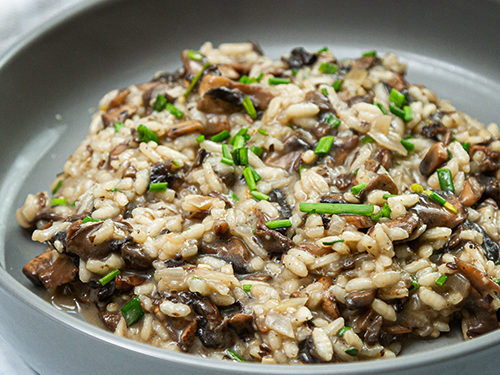

Risotto
Home

How to make a risotto
A rich and creamy Italian rice dish made with Arborio rice, broth, and Parmesan cheese.
Ingredients
- 1 1/2 cups Arborio rice
- 1 small onion, finely chopped
- 2 cloves garlic, minced
- 1/2 cup dry white wine (optional)
- 4 cups chicken or vegetable broth (kept warm)
- 1/2 cup grated Parmesan cheese
- 2 tablespoons olive oil
- 2 tablespoons butter
- Salt and pepper to taste
- Fresh parsley or chives (optional, for garnish)
Instructions
- Heat olive oil and 1 tablespoon butter in a large pan over medium heat.
- Sauté the onion until soft and translucent, about 5 minutes.
- Add garlic and cook for 1 more minute.
- Stir in the Arborio rice and toast it for 1–2 minutes, stirring constantly.
- Add the white wine and stir until it is mostly absorbed (skip this step if not using wine).
- Begin adding the warm broth, 1/2 cup at a time, stirring often.
- Wait until the liquid is mostly absorbed before adding more broth. Repeat until the rice is tender and creamy (about 18–20 minutes).
- Stir in the remaining butter and Parmesan cheese. Season with salt and pepper.
- Serve hot, garnished with herbs if desired.